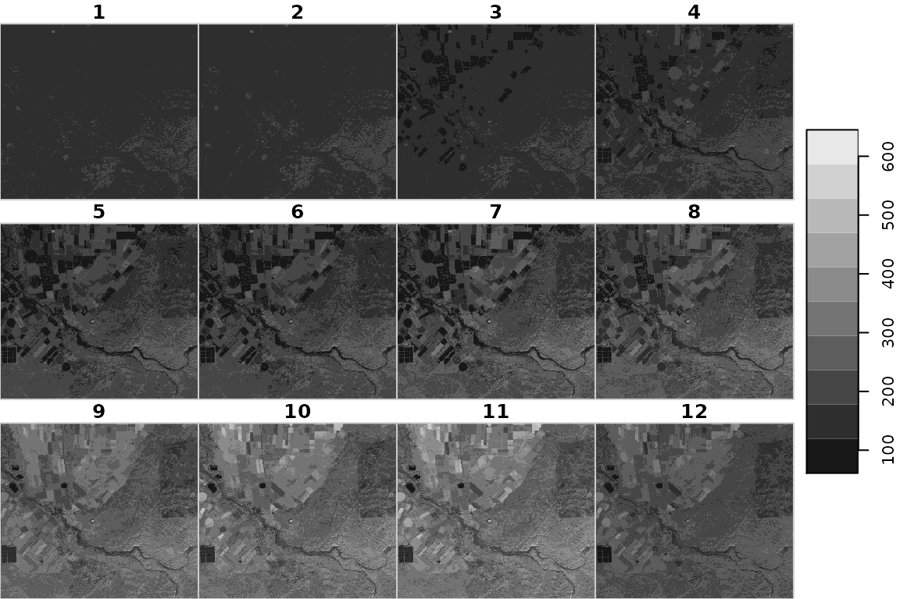
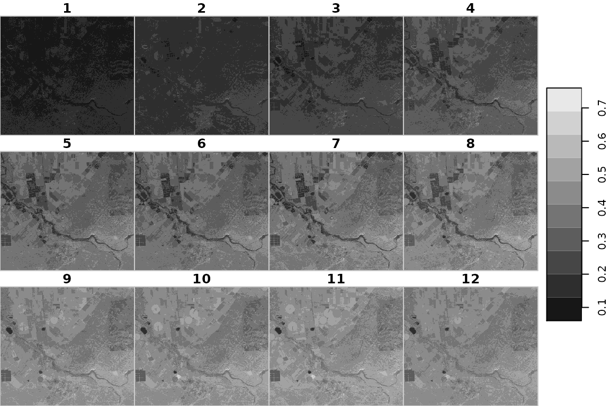

multiple.RmdFirst we will download a table with the images list and external metadata, such as atmospheric parameters obtained from AERONET (see first vegnette for details).
dat = read.csv("http://164.90.191.95:8000/metadata.csv")
dat #> id uo3_cm_atm uw_g_cm2 optical_depth_550nm #> 1 VE_VM01_VSC_L1VALD_ISRAW910_20190121 0.2934599 0.871283 0.1979913 #> 2 VE_VM01_VSC_L1VALD_ISRAW910_20190212 0.3009666 0.629208 0.1082641 #> 3 VE_VM01_VSC_L1VALD_ISRAW910_20190413 0.3122275 1.881999 0.6200267 #> 4 VE_VM01_VSC_L1VALD_ISRAW910_20190515 0.3112656 1.082818 0.1557290 #> 5 VE_VM01_VSC_L1VALD_ISRAW910_20190523 0.3070232 1.328981 0.3665861
Next we download the sample images and their respective metadata files. Each image is a 15-band Venus satellite image. The first 12 bands, which we are going to use, contain TOA reflectance values multiplied by 1000.
A temporary directory can be created for this purpose:
dir = tempdir()
Aletrantively, we can specify a specific location:
dir = "~/Downloads/venus"
Now, we download the images to the specified directory:
options(timeout = 600) # Download images files = paste0(gsub("_L1VALD_", "_PDTIMG_L1VALD_", dat$id), ".DBL.tif") files url = paste0("http://164.90.191.95:8000/", files) for(i in url) download.file(i, file.path(dir, basename(i))) # Download metadata files = paste0(dat$id, ".HDR") files url = paste0("http://164.90.191.95:8000/", files) for(i in url) download.file(i, file.path(dir, basename(i)))
Here is the raw first image:
library(stars) #> Loading required package: abind #> Loading required package: sf #> Linking to GEOS 3.8.1, GDAL 3.1.3, PROJ 7.1.1 in_file = paste0(gsub("_L1VALD_", "_PDTIMG_L1VALD_", dat$id[1]), ".DBL.tif") r = read_stars(file.path(dir, in_file)) r = r[,,,1:12] plot(r, breaks = "equal")

Next, we are going to process the images, calculating five atmospherically-corrected 12-band new images:
library(sixs) library(RSelenium) library(XML) for(image in dat$id) { # Read image in_file = paste0(gsub("_L1VALD_", "_PDTIMG_L1VALD_", image), ".DBL.tif") r = read_stars(file.path(dir, in_file)) # Subset bands r = r[,,,1:12] # Normalize r = r * 0.001 # Empty list to keep results output = list() for(i in 1:12) { # Subset band s = r[,,,i,drop=TRUE] # Read metadata input_m = paste0(image, ".HDR") l = xmlParse(file.path(dir, input_m)) l = xmlToList(l) m = get_venus_metadata(l, band = i) # TOA refl -> TOA rad s = refl_to_rad( toa_refl = s, date = m$date, esun = bands$esun[i], solar_zenith_angle = m$solar_zenith_angle ) # 6S coefficients remote_driver = remoteDriver(remoteServerAddr = "164.90.191.95", port = 4445L) remote_driver$open(silent = TRUE) xcoefficients = sixs_params( remote_driver = remote_driver, day = as.numeric(format(m$date, "%d")), month = as.numeric(format(m$date, "%m")), SolarZenithalAngle = m$solar_zenith_angle, SolarAzimuthalAngle = m$solar_azimuth_angle, ViewZenithalAngle = m$view_zenith_angle, ViewAzimuthalAngle = m$view_azimuth_angle, Longitude = m$longitude, Latitude = m$latitude, Uw = dat$uw_g_cm2[dat$id == image], Uo3 = dat$uo3_cm_atm[dat$id == image], opticalDepth = dat$optical_depth_550nm[dat$id == image], LowerWavelength = bands$lower[i], UpperWavelength = bands$upper[i], TargetAltitude = m$elevation, GroundCondition = "Patchy Ground", TargetReflectance = "Vegetation", EnvironmentReflectance = "Vegetation", TargetRadius = 0.5, quiet = TRUE ) remote_driver$close() # TOA rad -> BOA refl s = toa_rad_to_boa_refl(s, xcoefficients) # Add result to list output[[i]] = s } # Combine to multi-band raster output$along = 3 output = do.call(c, output) # Write out_file = gsub(".tif", "_out.tif", in_file, fixed = TRUE) write_stars(output, file.path(dir, out_file)) }
Here is the corrected first image:
s = read_stars(file.path(dir, out_file)) plot(s, breaks = "equal")
